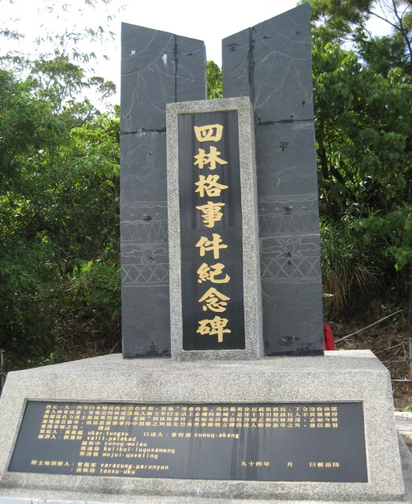

四林格事件紀念碑
「四林事件」又稱「撒西那武事件」，發生時間約在西
元1912年，當時，四林村村民都是靠著五穀、狩獵來維持生活，但由於當地的
農作物經常被山豬、猴子、鳥類偷吃，所以每戶均擁有槍枝守護農作，防範禽
獸侵襲。日本統治台灣後，因為擔心百姓反抗或者各種族之間發生衝突，因此
禁止百姓持有槍枝，並發布命令「百姓持有槍枝者，一律沒收」，引起當地原
住民不滿，四林村民因為不願繳械而引發的抗日事件。
資訊取自: https://solomo.xinmedia.com/archi/4527-silin
照片取自:牡丹鄉公所